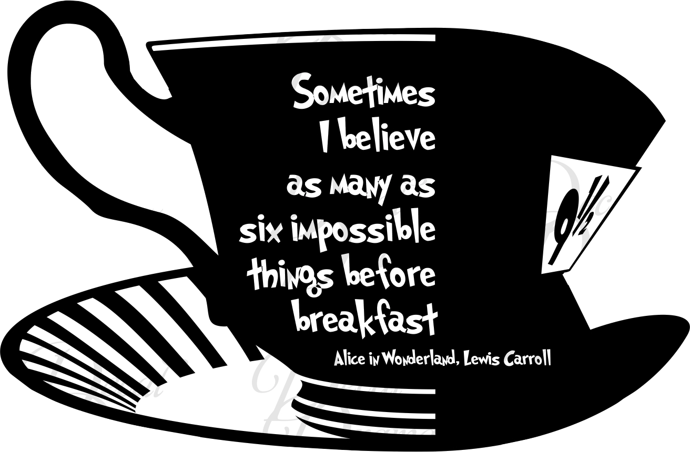
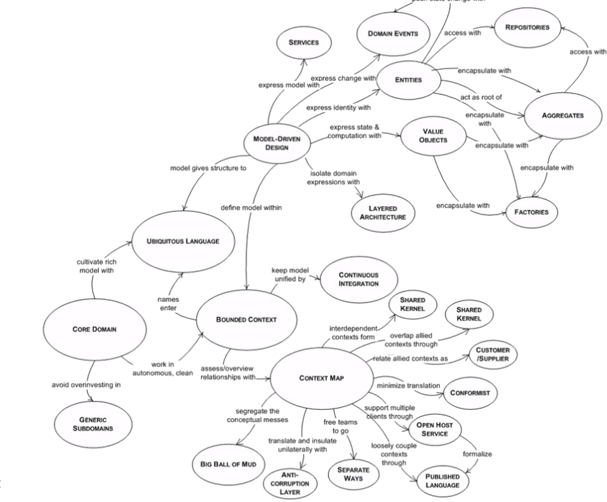

Taming Agile Architecture
Michael Haeuslmann @

Disclaimer
The opinions expressed in this presentation and on the following slides are solely those of the presenter and not necessarily those of TNG Technology Consulting.
"Individuals and interactions over processes and tools..."
- Agile Manifesto
Let's be agile, lets interact!
Agenda
Agile/Architecture Myths
Practicing Agile Architecture
Why do we even talk about this?
“The word 'agile' has been subverted to the point where it is effectively meaningless, and what passes for an agile community seems to be largely an arena for consultants and vendors to hawk services and products.”
- Dave Thomas
The Fine Art of Baloney Detection
 "The Demon-Haunted World: Science as a Candle in the Dark" - Carl Sagan
"The Demon-Haunted World: Science as a Candle in the Dark" - Carl Sagan
- there must be independent confirmation of "facts"
- arguments from authorities carry little weight
- try not to get overly attached to a hypothesis, just because it's yours
- ...
Agile!
The Good, the Hype and the Ugly

Bertrand Meyer
"One Hacker Way"
by Erik Meijer
Agile Manifesto
Individuals and interactions
over processes and tools
Working software
over comprehensive documentation
Customer collaboration
over contract negotiation
Responding to change
over following a plan
That is, while there is value in the items on
the right, we value the items on the left more.
Myth #1
Agile means no documentation

Myth #2
Agile means no architecture
Myth #3
Good coding practices lead to good architecture
Myth #4
Agile means everything is easy to change
(even architecture)
Myth #5
Scrum === Agile
Myth #6
We're agile because ...
- ... we're using Jira
- ... we're doing Standups
- ... we use microservices
- ... we're using DDD
Architecture
"Software architecture refers to the high level structures of a software system, the discipline of creating such structures, and the documentation of these structures."
- Wikipedia
Architecture
"[Architecture] is the stuff that's hard to change"
"Architecture is not all about diagrams; it's about promoting collaboration and communication of the critical parts of the system."
- Martin Fowler
Problems with traditional architecture
- ivory-tower architecture
- making unnecessary decisions too early
- architect not part of the team
- architect not accountable
Architecture is the stuff that's hard to change?
So how do we come up with agile architecture?
Gather all known requirements
Identify nouns and verbs
Whiteboard Architecture

Class-Responsibility-Collaboration Cards (CRC)
Class
Responsibility
Collaboration
"Factor your system so that artifacts that change at similar rates are together."
- Foote & Yoder
Test your architecture
Go crazy
- native support for Arabic users
- Bitcoin check-out
- record user interaction for audits
- make all user actions undoable
- create native apps for iOS, Android, ...
- add offline support
Design Decisions
- as little as possible, as much as needed
- think big, act small
- KISS - Keep It Simple, Stupid
- YAGNIY - You ain't gonna need it (yet)
Architectural Decisions
"Beware of people who love to think about abstractions more than coding software." - Steve Green
Microservices
"Beware of the distributed monolith connected via a database" @lornajane #CraftConf meetup pic.twitter.com/SvsxykXiQY
— Daniel Bryant (@danielbryantuk) April 26, 2017
Fallacies of distributed computing
- The network is reliable.
- Latency is zero.
- Bandwidth is infinite.
- The network is secure.
- Topology doesn't change.
- There is one administrator.
- Transport cost is zero.
- The network is homogeneous.
You are not Netflix.
You're probably fine starting out with a Monolith.
Think in modules/services
but
distribute over the network only if absolutely necessary
Domain Driven Design
vs.
Domain Centered
Domain-Driven Design
Domain Driven Design
- Tackling Complexity in the Heart of Software
- introduces overhead
- requires knowledge of existing architectural patterns
- not a one-size-fits-all approach
Same thing goes for Event Sourcing
Everyday Architecture
- sprint 0, -1, ... for big projects
- architecture backlog items
- code reviews also from a 30.000 foot view
- retrospectices, ...
- in small/medium projects, everyone is the architect
"An architect's value is inversely proportional to the number of decisions she/he makes."
- Martin Fowler
Bring your Architecture and Documentation back to life
Revive your Documentation
- Single Source of Truth
- Behavior Driven Development
- Word < Wiki / Confluence < Markdown/TeX + Git
- Extract information (e.g. screenshots from acceptance tests, architecture from code, ...)
- Broken window theory (markdown linters, grammar check e.g. write-good, check changelog, ...)
Revive your Architecture
- detects even the sneakiest dependencies
- generates dependency visualizations
- hackable (grep, sed, awk, ...)
- supports PHP 5.2 to 7.1
Features
-
Text Output
For quick feedback, debugging, UNIX pipes etc. -
Various Visualisations (UML & DSM & dot)
Detailed dependency & architectural analysis - (Metrics)
How does it work?
- parses PHP code
- builds an abstract representation (AST)
- detects dependencies for all classes
- applies filters and transformers
- writes output as text, pictures e.g.
λ wget http://phar.dephpend.com/dephpend.phar -O ~/bin/dephpend
λ dephpend --help
_ _____ _ _ _____ _
| | | __ \| | | | __ \ | |
__| | ___| |__) | |__| | |__) |__ _ __ __| |
/ _` |/ _ \ ___/| __ | ___/ _ \ _ \ / _` |
| (_| | __/ | | | | | | | __/ | | | (_| |
\__,_|\___|_| |_| |_|_| \___|_| |_|\__,_| version 0.4
Usage: ...
λ dephpend text ~/workspace/dephpend/src
Mihaeu\PhpDependencies\Util\AbstractMap --> Mihaeu\PhpDependencies\Util\Collection
Mihaeu\PhpDependencies\Util\DI --> Mihaeu\PhpDependencies\Analyser\Analyser
...


<?php
$cmd = shell_exec('dephpend text src --no-classes');
$constraints = [
'Model.* --> .*View',
'View.* --> .*Model',
];
$regex = '/('.implode(')|(', $constraints).')/x';
if (preg_match($regex, $cmd)) {
echo 'Architecture violation'.PHP_EOL;
exit(1);
}
ArchUnit
@ArchTest
public static final ArchRule layers_are_respected = layeredArchitecture()
.layer("Root").definedBy("com.tngtech.archunit")
.layer("Base").definedBy("com.tngtech.archunit.base..")
.layer("Core").definedBy("com.tngtech.archunit.core..")
.layer("Lang").definedBy("com.tngtech.archunit.lang..")
.layer("Library").definedBy("com.tngtech.archunit.library..")
.layer("JUnit").definedBy("com.tngtech.archunit.junit..")
.whereLayer("JUnit").mayNotBeAccessedByAnyLayer()
.whereLayer("Library").mayOnlyBeAccessedByLayers("JUnit")
.whereLayer("Lang").mayOnlyBeAccessedByLayers("Library", "JUnit")
.whereLayer("Core").mayOnlyBeAccessedByLayers("Lang", "Library", "JUnit")
.whereLayer("Base").mayOnlyBeAccessedByLayers("Root", "Core", "Lang", "Library", "JUnit");Summary
- Use your baloney detection kit
- be wary of agile "processes"
- let's all be architects
- fail fast and learn rapidly
- live architecture
- validate your architecture decisions
- revive your documentation
Questions?
Michael Haeuslmann
@michaelhaeu
https://github.com/mihaeu
Feedback?
Books
- Clean Architecture by Robert C. Martin
- Agile! - The Good, the Hype and the Ugly by Bertrand Meyer
- The Pragmatic Programmer by Andrew Hunt, David Thomas
- Extreme Programming Explained by Kent Beck, Cynthia Andres
- ...
Sources
http://www.denofgeek.us/sites/denofgeekus/files/6/25/frankenstein-1931.jpg
https://www.slideshare.net/gahlawatanju21/agile-reluctancy-in-india-anju-gahlawat
http://www.bradvg.com/blog/the-problem-with-good-intentions/
KurtKamka https://www.getdpi.com/forum/leica/21559-s-show-us-your-s2-shots-22.html
https://tisquirrel.me/2016/01/03/say-agile-one-more-time/
http://www.br.de/themen/wissen/inhalt/umwelt/wueste-wuestentiere104.html
https://blogs.msdn.microsoft.com/eugeniop/2010/05/24/windows-azure-architecture-guide-part-1-release-candidate-documents-updated/
http://eduart4kids.com/painting-for-kids/
https://image.slidesharecdn.com/quangnguyencontinuousintegrationxpday2015danangquangnguyen-150520014341-lva1-app6892/95/quang-nguyen-continuous-integration-xp-day-2015-vietnam-danang-3-638.jpg?cb=1432086426
https://blogs.msdn.microsoft.com/willy-peter_schaub/2010/11/22/are-the-rangers-courageous-or-crazy-to-brainstorm-and-adapt-methodologies-from-clever-people-as-part-of-ruck/
https://dotnetcodr.files.wordpress.com/2015/07/ddd-full-diagram1.png
https://images-na.ssl-images-amazon.com/images/I/81vKl1%2BuEVL._SL1500_.jpg
https://dotnetcodr.files.wordpress.com/2015/07/ddd-full-diagram1.pnghttp://canarydwarf.co.uk/b/wp-content/uploads/2014/05/CD_questions_68942389.jpg
https://www.batimes.com/images/wick_mar4_2.jpg
https://guidedpathedge.com/wp-content/uploads/2016/01/keep-calm-and-prioritize.png